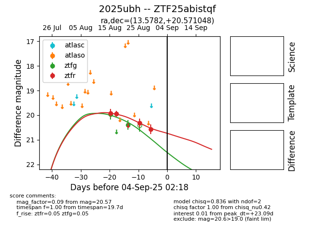

Target 2025ubh at 2025-08-21 11:20, see:
FINK: fink-portal.org/ZTF25abistqf
Lasair: lasair-ztf.lsst.ac.uk/objects/ZTF25abistqf
ALeRCE: alerce.online/object/ZTF25abistqf
TNS: wis-tns.org/object/2025ubh
YSE: ziggy.ucolick.org/yse/transient_detail/2025ubh
alt names
ZTF25abistqf (ztf,alerce)
2025ubh (tns,yse)
coordinates:
equatorial (ra, dec) = (13.5782,+20.57100)
galactic (l, b) = (123.8417,-42.29567)
photometry
last ztfg=19.97, ztfr=19.94
1 ztfg, 2 ztfr detections
